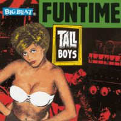

Tall Boys - Funtime (Album, 1998)
01 - Feel It (3:02)
02 - Star (2:54)
03 - The Baron (2:50)
04 - Wednesday Addams' Boyfriend (2:23)
05 - Through A Glass (2:16)
06 - Beast On The Moor (3:09)
07 - Ride This Torpedo (2:21)
08 - Dawn Of The Flies (2:39)
09 - Final Kick (3:31)
10 - The Interceptor (2:26)
11 - Dragster (2:45)
12 - Action Woman (2:32)
13 - Take A Walk (2:29)
14 - Brand New Gun (2:14)
15 - Last House On The Left (2:02)
16 - Took A Long Time (3:01)
17 - Last Night (2:45)
© Big Beat Records :: [CDWIKD 175] © Ace Records :: [Digital]
Notes
United Kingdom.
Songs 02, 03, 04, 05, 06, 07, 08, 09, 10, 15, 16, 17 are written by Nigel Lewis
Song 11 is written by Johnny Sudetta / Roger Christian
Song 12 is written by Warren Kendrick
Song 13 is written by Nigel Lewis / Mark Robertson
Song 14 is written by James Alan
My experience is based on Digital release of this album, with only seventeen tracks (compared to the original release: excluding eleven tracks labeled as "Demo" and "Live")
reference information: Discogs®
Review
110/366 (Project 366)
Garage Rock'n'Roll with Psychobilly look. Ferocious tunes, rapt musicians and ebullient rockin' sound. With fancy lyrics and powerful arrangements.